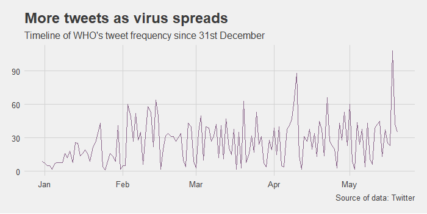
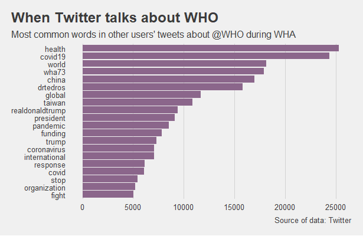

WHO tweets in the pandemic
The World Health Organisation has been at the centre of attention since the beginning of the coronavirus pandemic. Countries around the world have looked to it for advice and reliable information in this unprecedented time with expectations of an organized worldwide response. At the time when national governments still struggle to come up with the most sensible plans, not even the WHO escaped its share of controversy. Apart from changing views on health and safety measures, such as advice against wearing face masks which was later recommended, the organisation faced many questions regarding its allegiance and impartiality - a hot topic in the run up to the 73rd World Health Assembly. What does WHO’s online communication say about its preferences? A quick look at its Twitter activity reveals patterns.
More tweets as virus spreads
According to WHO’s timeline, the beginning of the epidemic dates back to 31st December 2019 when the first cases of a pneumonia-like disease were reported in Wuhan, China, later identified as the new type of coronavirus. During the first month, the story seemed to be confined to China and received little attention, as reflected by WHO’s activity on Twitter which only picked up once reports of similar cases appeared in other countries and the virus started to spread.
Covid19, health workers and China
Since then, WHO has tweeted more often to address the escalating situation around the world. Mostly referring to WHO’s Director-General Dr Tedros Adhanom and its other related agencies, its messages have emphasized safety measures such as regular hand washing and staying at home, discussed the importance of mental health and factual information, and overwhelmingly mentioned China as one of the most frequently used hashtags in its tweets overall.
Breaking: it's a pandemic
The Twitter post which attracted the most attention, in terms of likes and retweets, was the one in which WHO officially declared a global pandemic on 11th March 2020, a much anticipated step which critics said Dr Adhanom should have taken earlier.
🚨 BREAKING 🚨
— World Health Organization (WHO) (@WHO) March 11, 2020
"We have therefore made the assessment that #COVID19 can be characterized as a pandemic"-@DrTedros #coronavirus pic.twitter.com/JqdsM2051A
Are some member countries more equal than others?
The main criticism WHO faced, however, questioned its impartiality and equal treatment of different member countries with special attention paid to the growing influence of China. The suspicion escalated when a senior adviser to the organisation seemed to avoid questions about Taiwan in an interview in March, despite the country’s successful strategy and low number of cases, indirectly suggesting it has already been covered by his previous answer on China.
WHO’s tweets tell a similar story. Since January, a disproportionate number of tweets have mentioned China in the text compared to all other countries. While a certain level of added attention was to be expected, considering the virus originated in the country, the difference is clear. The frequency dropped after a pandemic was declared but in comparison, during the whole period, Taiwan was only mentioned in a single tweet - a video from WHO’s media briefing in April during which a journalist asked about Taiwan’s exclusion from the global Covid-19 response. Experts answered that Taiwan was part of the technical network and actively engaged in sharing information. Its exclusion from the decision-making process and the World Health Assembly was simply explained as the decision of other member countries.

The (tweeting) world remains concerned
Yet it seems that the rest of the world remains concerned about the power dynamic within the WHO which was revealed by recent events. During the World Health Assembly, held on 18th and 19th May 2020, tweets posted by other users that mentioned WHO’s account discussed many of the same themes but also far more often mentioned Taiwan, Donald Trump and funding, reflecting yet another outcome of the controversy, the possibility of suspending the United States’ financial contributions to the organisation, expressed by Donald Trump.
Created for Advanced Data and Coding class at City University of London in May 2020.